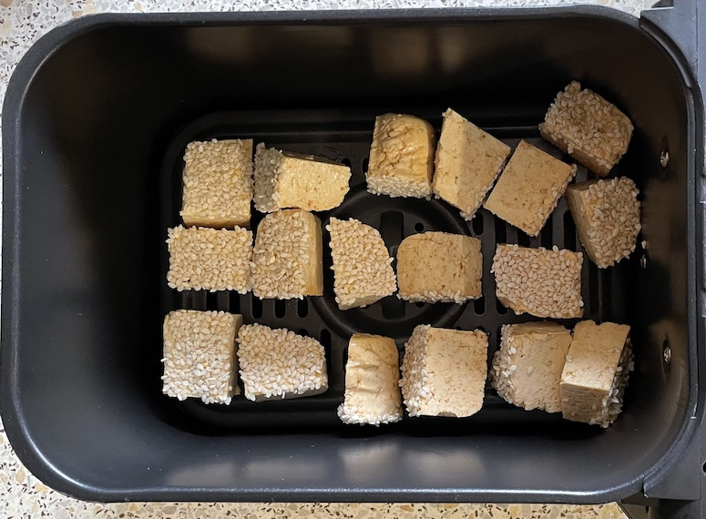
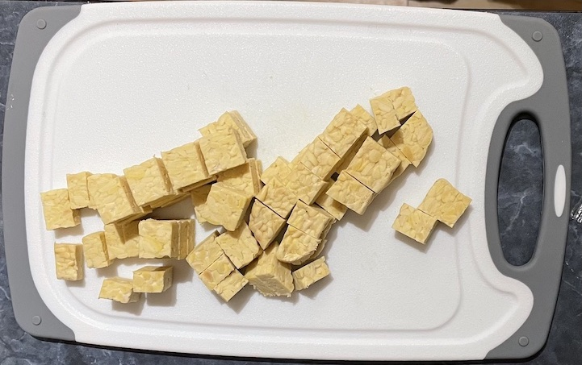

Tofu & tempah
Tofu
- Press for 30 mins
- Cut into large chunks
- Marinate for 15 mins in
- 1 tbsp soy sauce
- 1 tbsp sesame oil
- 1 clove garlic chopped
- Dip one side in maple syrup to coat in pre-roasted sesame seeds
- Roast in air fryer at 180°C for 10 / 11 / 12 mins (take piece out every min to find out which best)
Notes
- Large chunks so crispy on outside and soft in middle, small chunks cook hard and not nice
- Need to pre-roast sesame seeds as won't roast in air fryer

Tempah
- Cut into 1.5cm chunks
- Fry in neutral oil for 6-7 mins until golden
